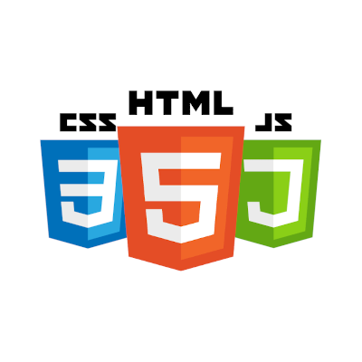
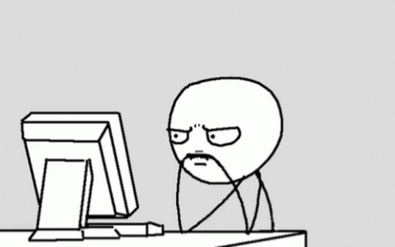
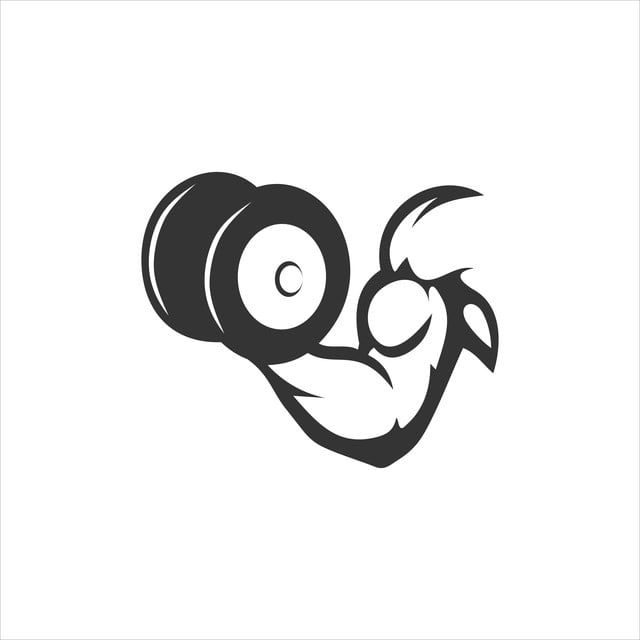

About me
Hi there, I’m Massimiliano Russo, a 19 y/o student in the “La Sapienza” University in Rome. I started coding when i was 12 y/o and since there, i started to love coding. Oh, actually I also love working out!

Coding
I started coding at 12 y/o with the of creating a video-game. Over time I started to improve in web development and right now it is my main skill.

Debugging
When things go wrong, I don’t just fix the bug—I interrogate the code, chase down rogue semicolons, and bring missing brackets to justice. Every print statement is a clue and every error is a plot twist.

Workout
I have a passion for working out, especially in powerlifting. The discipline, focus, and strength required in this sport are things I strive to bring into all aspects of my life.